Bedienung#
Für Mitarbeitende#
Anmelden#
Portal öffnen und Mit Microsoft anmelden wählen. Es gilt dasselbe Konto wie für Outlook und Teams. Ein eigenes Passwort für das Portal gibt es nicht.
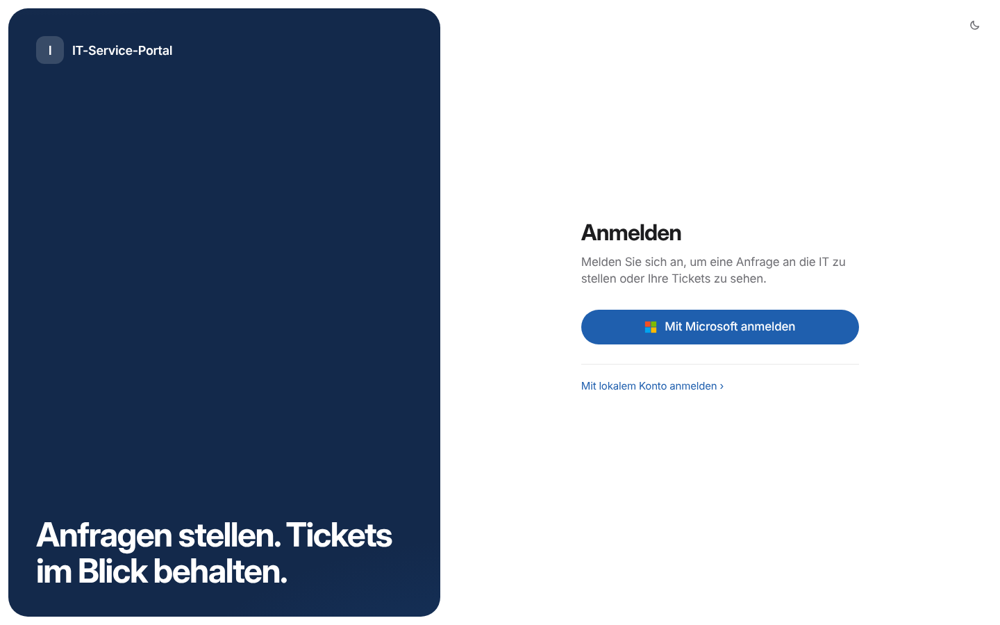
Anfrage stellen#
- In der großen Farbfläche unter Anfrage geht an das Ticketsystem wählen. Farbe und Logo zeigen, wohin die Anfrage geht. Wer nur ein Ticketsystem nutzen darf, sieht keine Auswahl.
Formular wählen, z. B. Störung melden oder Hardware anfordern.
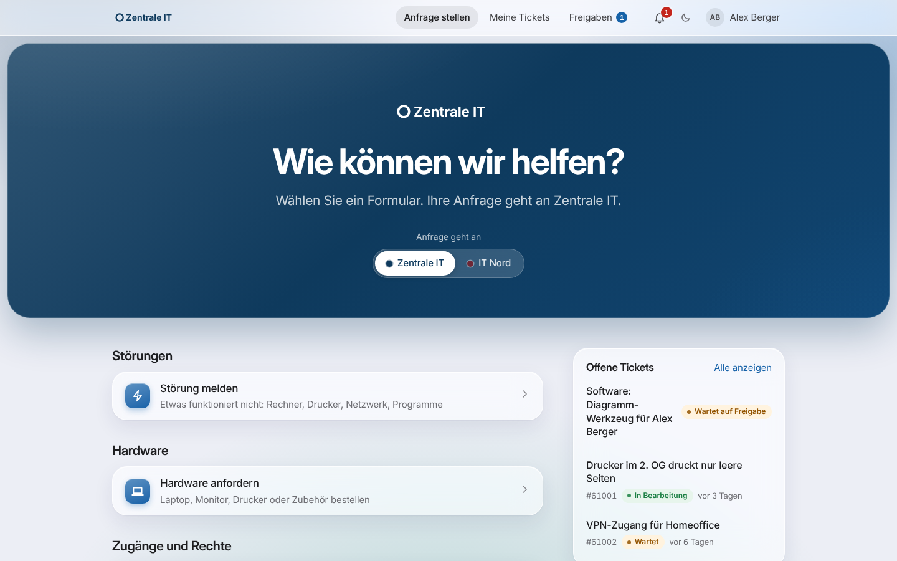
Beim zweiten Ticketsystem wechseln Farben und Formulare:
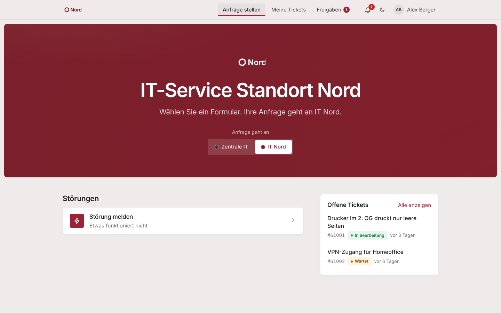
Formular ausfüllen. Pflichtfelder sind mit * markiert. Manche Felder erscheinen erst, wenn sie gebraucht werden (z. B. „Welches Programm?“ nur bei „Programm“).
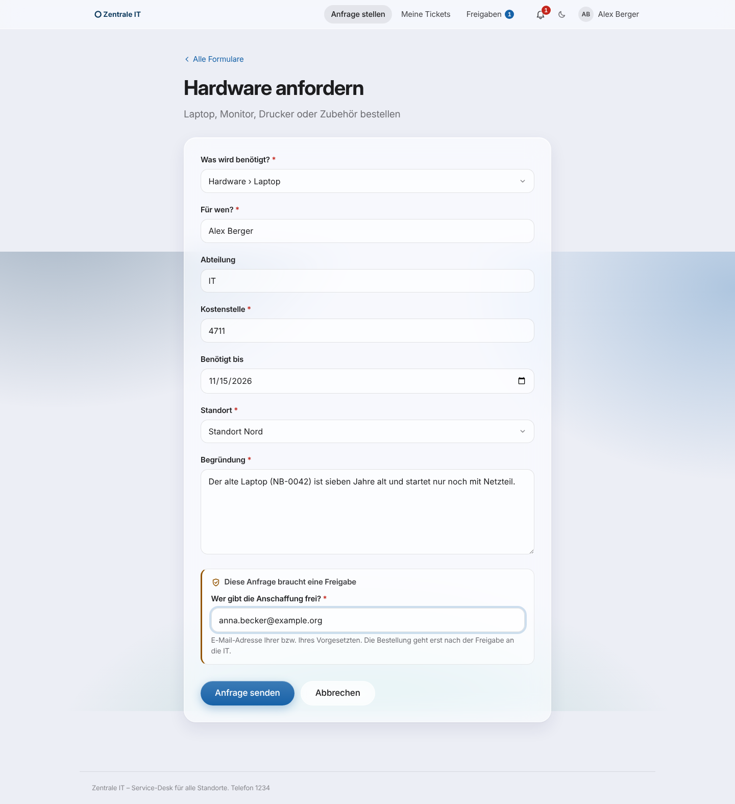
Fehlt etwas, markiert das Portal die Felder direkt:
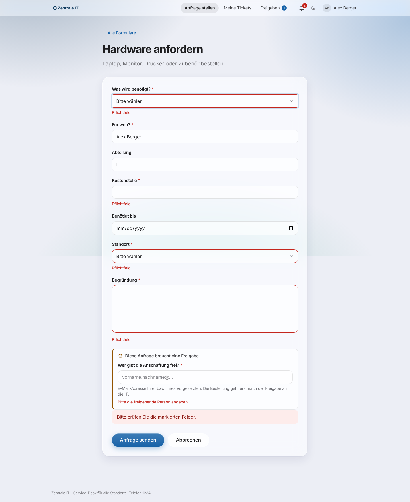
Anfrage senden. Die Eingangsbestätigung mit Ticketnummer kommt per E-Mail von Zammad.
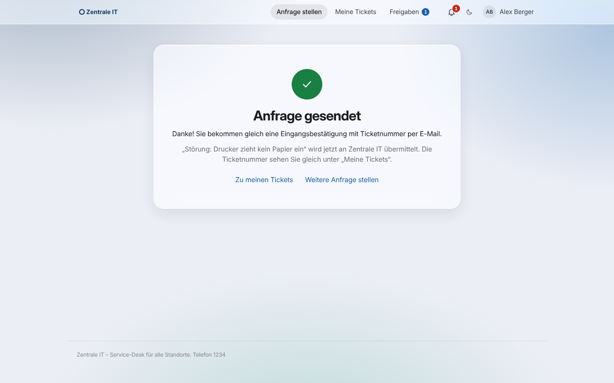
Braucht die Anfrage eine Freigabe, steht stattdessen Wartet auf Freigabe – siehe nächster Abschnitt.
Dateien: Screenshots, PDFs, Office-Dokumente oder Textdateien lassen sich anhängen (je Formular festgelegt, meist bis 10 MB). Jede Datei wird auf Viren geprüft. Programme, Skripte und HTML-Dateien werden abgelehnt.
Anfragen mit Freigabe durch Vorgesetzte#
Manche Formulare – z. B. Hardware anfordern oder kostenpflichtige Software – brauchen eine Freigabe. Dann gibt es im Formular einen eigenen Kasten Diese Anfrage braucht eine Freigabe. Er kann auch erst erscheinen, wenn er gebraucht wird (z. B. erst bei „Ja, Lizenz nötig“).
Die E-Mail-Adresse der bzw. des Vorgesetzten eintragen. Ab drei Buchstaben schlägt das Portal Personen vor, die sich schon einmal angemeldet haben. Die eigene Adresse geht nicht.
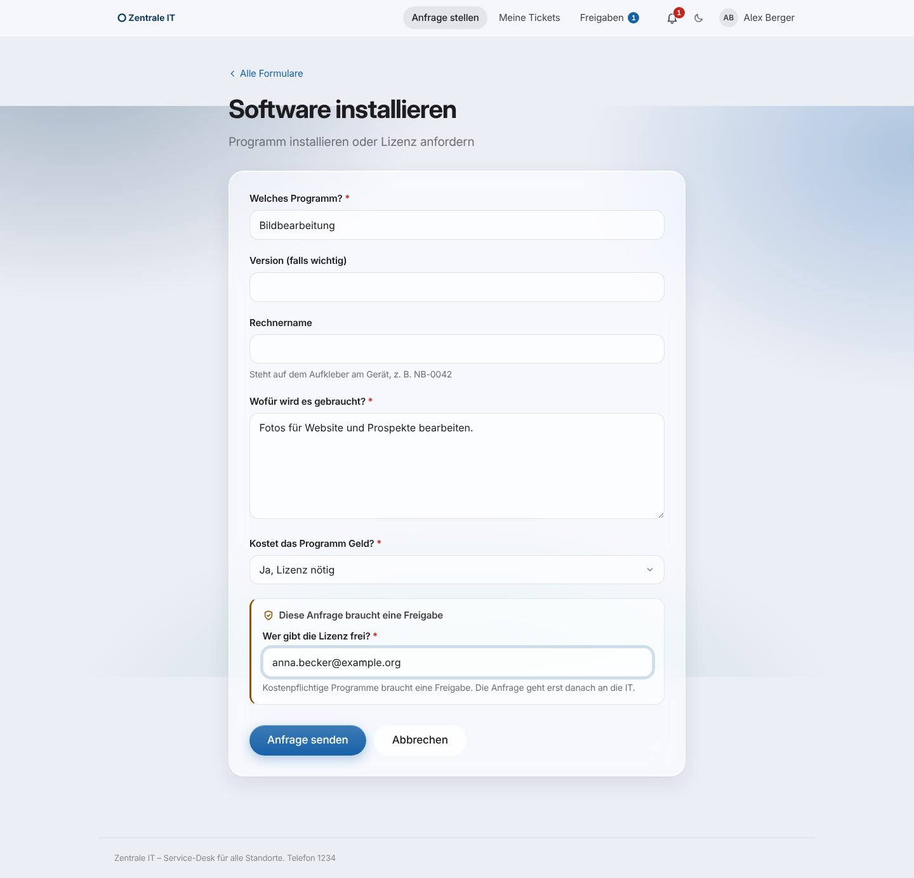
Anfrage senden. Die Anfrage geht jetzt noch nicht an die IT, sondern wartet im Portal. Die freigebende Person sieht sie unter Freigaben und an der Glocke.
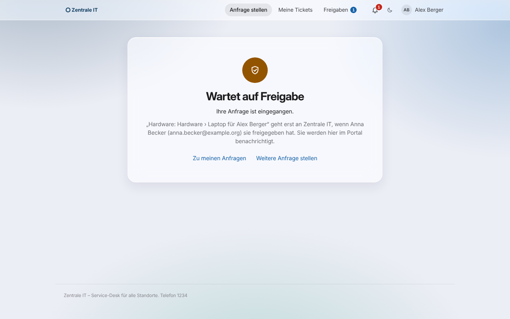
Hat sich die Person noch nie im Portal angemeldet, weist das Portal darauf hin – dann am besten kurz Bescheid geben.
Unter Meine Anfragen steht, bei wem die Anfrage liegt und bis wann entschieden werden muss. Dort lässt sie sich zurückziehen oder an eine andere Person geben (z. B. bei Urlaub) – höchstens dreimal; die Frist läuft dabei weiter.
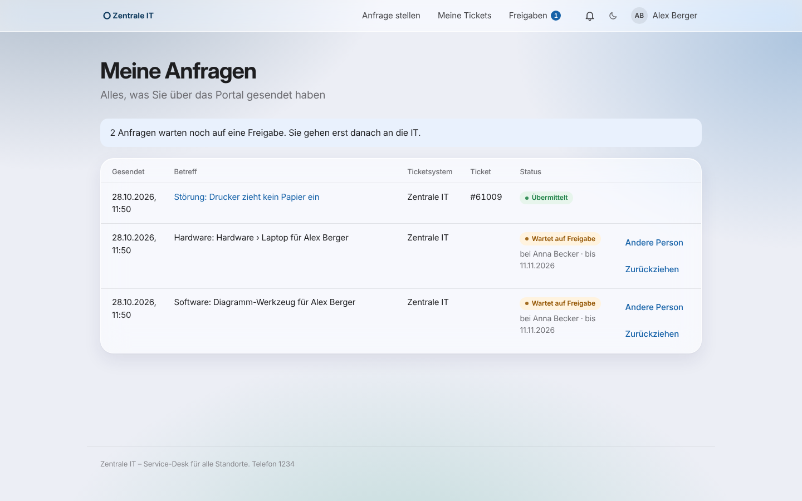
Nach der Entscheidung meldet sich die Glocke:
- Freigegeben: Die Anfrage geht automatisch an die IT. Im Ticket steht, wer wann freigegeben hat.
- Abgelehnt: Die Begründung steht in der Benachrichtigung und unter „Meine Anfragen“. Inhalt und Anhänge werden gelöscht, nichts geht an die IT.
- Abgelaufen: Ohne Entscheidung verfällt die Anfrage nach 14 Tagen (Einstellung der IT) und wird gelöscht. Bei Bedarf neu stellen.
Freigaben erteilen (für Vorgesetzte)#
Wartet etwas auf Ihre Entscheidung, zeigt die Navigation Freigaben mit einer Zahl, und die Glocke meldet „Freigabe erbeten“. Nach drei Tagen kommt einmal eine Erinnerung.
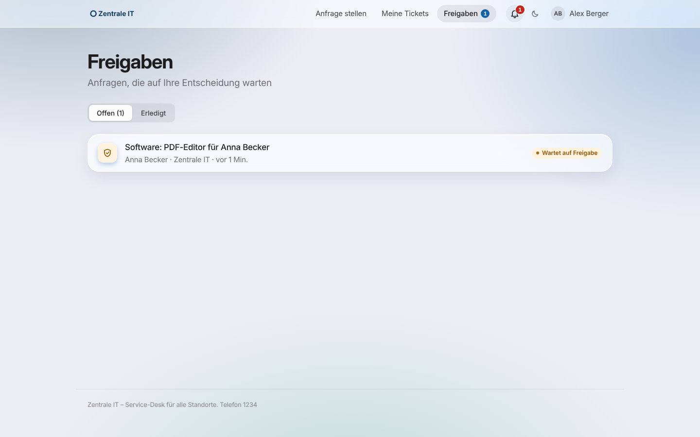
Ein Klick öffnet die Anfrage: wer sie gestellt hat, wohin sie geht, alle Angaben und Anhänge (Anhänge zum Herunterladen).
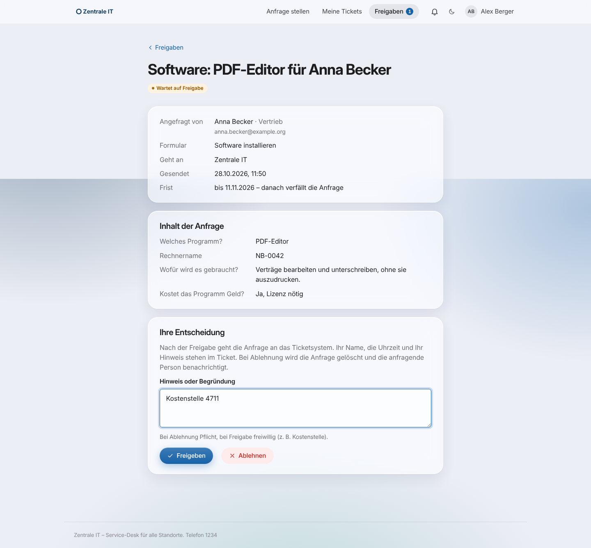
- Freigeben – die Anfrage geht sofort an die IT. Ein Hinweis ist freiwillig (z. B. die Kostenstelle) und steht mit Ihrem Namen und der Uhrzeit im Ticket.
- Ablehnen – nur mit kurzer Begründung. Die anfragende Person wird benachrichtigt, die Anfrage gelöscht.
Unter Erledigt stehen Ihre Entscheidungen. Den Inhalt zeigt das Portal danach nicht mehr an – er liegt dann im Ticket bzw. ist gelöscht.
Benachrichtigungen#
Die Glocke oben rechts zeigt neue Nachrichten mit einer Zahl: neue Antwort der IT auf ein eigenes Ticket (mit Anfang der Antwort, ein Klick öffnet das Ticket), Freigabe erbeten, Erinnerung, freigegeben, abgelehnt, abgelaufen, zurückgezogen. Ein Klick auf eine Nachricht öffnet die passende Seite; Alle gelesen setzt den Zähler zurück. Nachrichten werden nach 90 Tagen gelöscht.
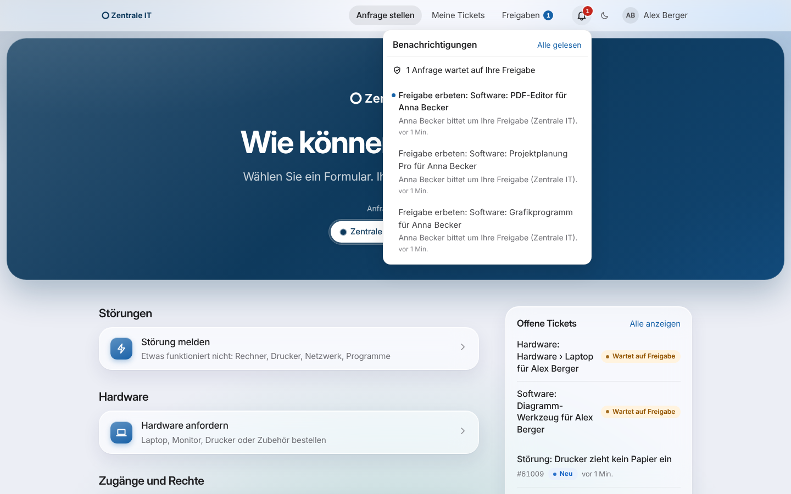
Das Portal verschickt keine E-Mails. Über die Eingangsbestätigung und Antworten der IT informiert per E-Mail wie bisher Zammad.
Antworten der IT erkennt das Portal, indem es jede Minute in Zammad nach geänderten Tickets schaut (Einstellung TICKET_WATCH_SECONDS, 0 schaltet es ab). Benachrichtigt werden nur öffentliche Antworten von Bearbeitern – keine internen Notizen – und nur Personen, die das Portal kennt. Der API-Benutzer braucht dafür Leserechte (ticket.agent) auf die Gruppen der Tickets; ohne diese Rechte bleibt die Glocke für Antworten stumm.
Meine Tickets#
Unter Meine Tickets stehen alle eigenen Tickets, sortiert nach letzter Änderung, mit Reitern wie „Offene Tickets“ und „Erledigt“. Was noch nicht an Zammad übermittelt wurde, steht oben unter „Noch nicht übermittelt“.
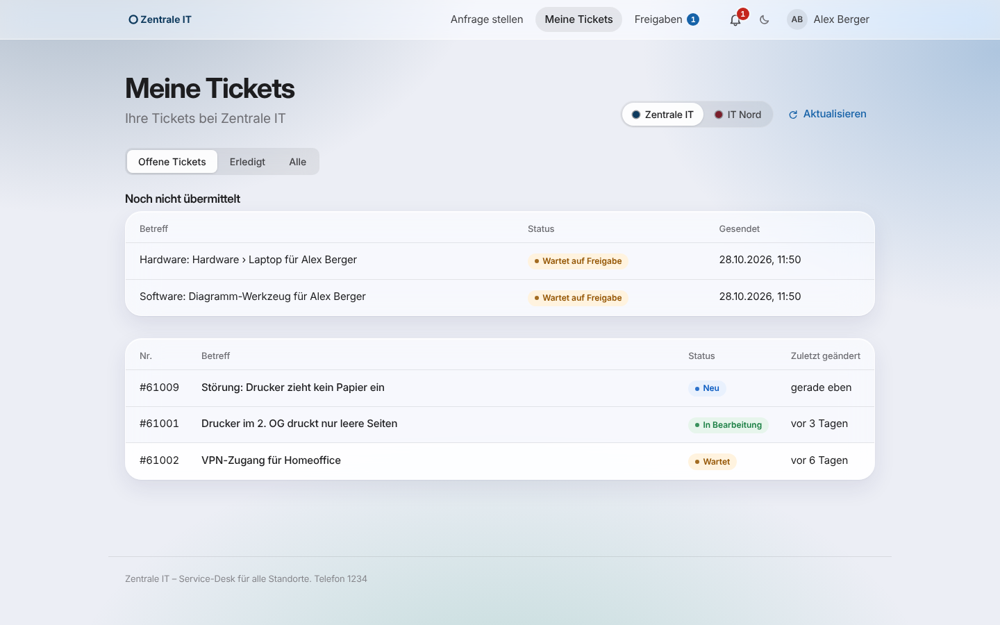
Ein Klick öffnet den Verlauf mit allen Antworten der IT. Interne Notizen der IT sind nicht sichtbar. Unten lässt sich antworten, auch mit Anhang. Eine Antwort auf ein erledigtes Ticket öffnet es in der Regel wieder.
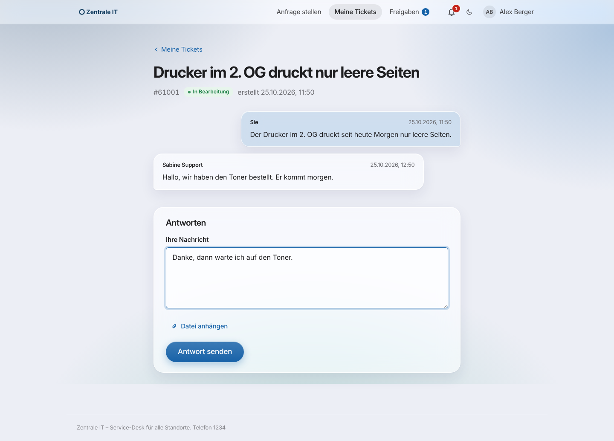
Status und Störungen#
Ist die Funktion eingeschaltet, steht oben im Menü Status. Die Status-Seite zeigt alles auf einer Seite – für alle Ticketsysteme, die man sieht – und ist unterteilt in Störungen, Wartungen, Services und Bekannte Probleme (oben zum Springen).
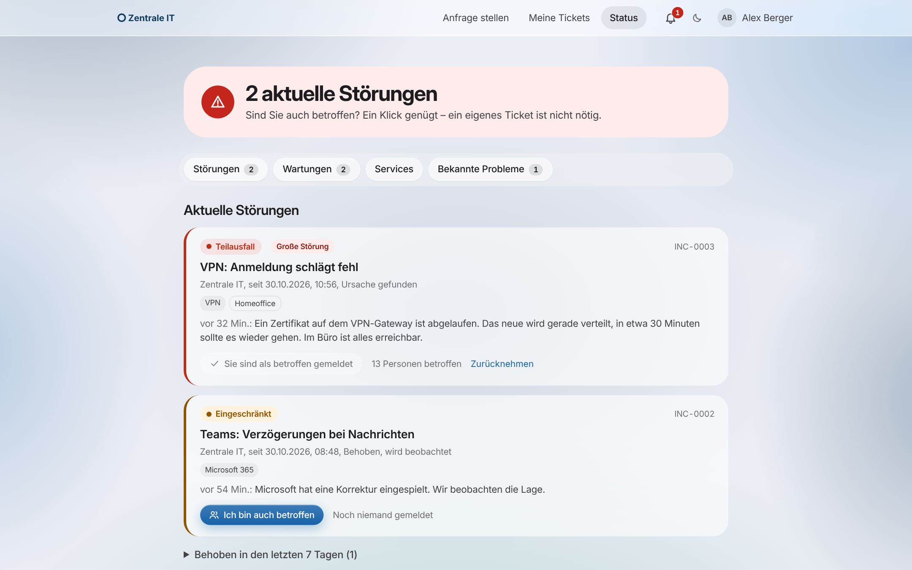
- Große Störungen erscheinen zusätzlich als Banner oben auf jeder Seite des Portals.
- Ich bin auch betroffen: Ein Klick statt eines eigenen Tickets. Wer sich meldet, bekommt jedes Update und die Behebung unter der Glocke. Die Meldung lässt sich zurücknehmen.
- Services zeigen ihren Zustand: In Betrieb, Eingeschränkt, Teilausfall, Ausfall oder Wartung.
- Geplante Wartungen stehen vorab auf der Status-Seite; während der Wartung gibt es ein Banner.
- Bekannte Probleme mit einer Lösung für die Zwischenzeit („So geht es in der Zwischenzeit“).
- Gehört ein Formular zu einem Service mit Störung, zeigt das Formular den Hinweis gleich oben – mit „Ich bin auch betroffen“. Wer trotzdem eine Anfrage schickt, kann das tun; die IT sieht in Zammad, dass sie zur Störung gehört.
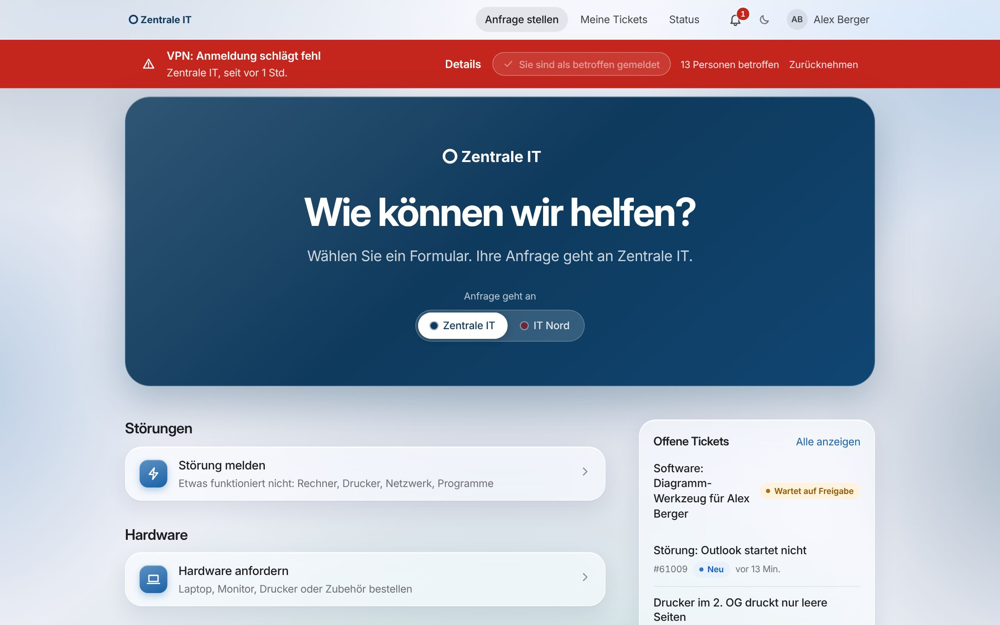
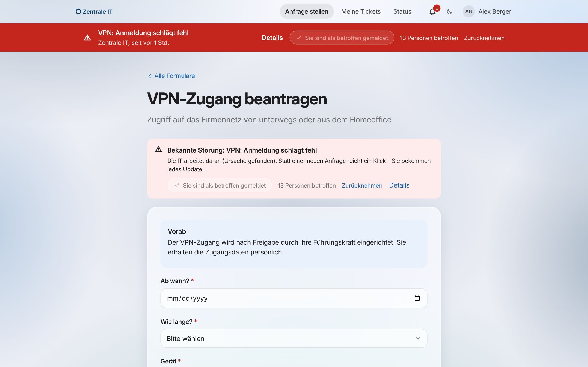
Auf dem Handy#
Das Portal passt sich an kleine Bildschirme an.
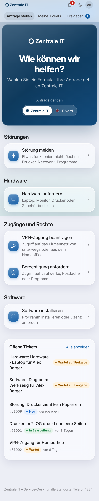
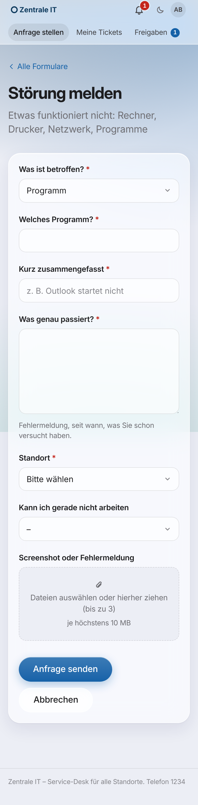
Als App installieren#
Das Portal lässt sich in Edge und Chrome als App installieren: „Als App installieren“ im Menü unter dem eigenen Namen. Es öffnet sich dann in einem eigenen Fenster und hat ein Symbol im Startmenü und in der Taskleiste. Auf iPhone und iPad: in Safari Teilen › Zum Home-Bildschirm. Eine Anleitung für jeden Browser steht im Portal unter Konto und Sicherheit › Als App nutzen. Oft hat die IT die App schon per Intune verteilt – dann ist sie bereits im Startmenü. Mehr: Portal als App.


Helles und dunkles Design#
Das Mond-Symbol oben rechts schaltet auf das dunkle Design um, die Sonne zurück auf hell. Ohne eigene Wahl folgt das Portal der Einstellung von Windows, macOS oder dem Handy. Die Wahl wird nur im eigenen Browser gespeichert.
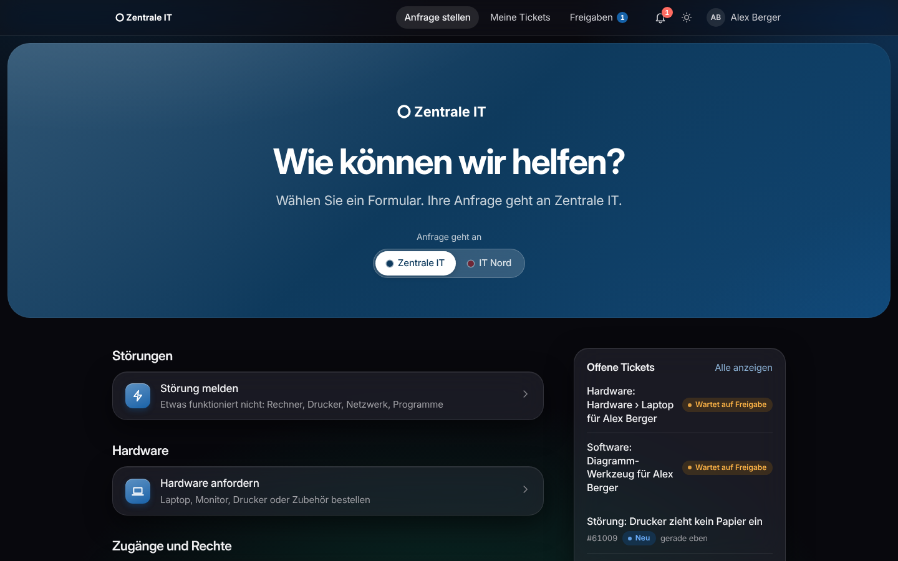
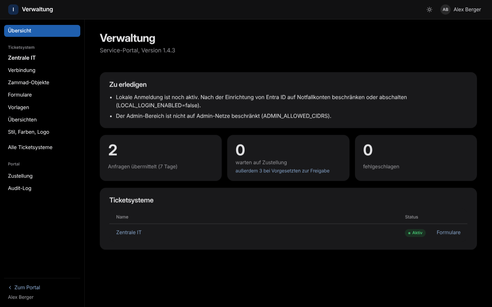
Konto#
Unter dem Namen oben rechts: Meine Anfragen (alles, was über das Portal gesendet wurde, mit dem Stand der Freigaben), Freigaben, Konto und Sicherheit, Als App installieren (wenn der Browser es anbietet) und Abmelden.
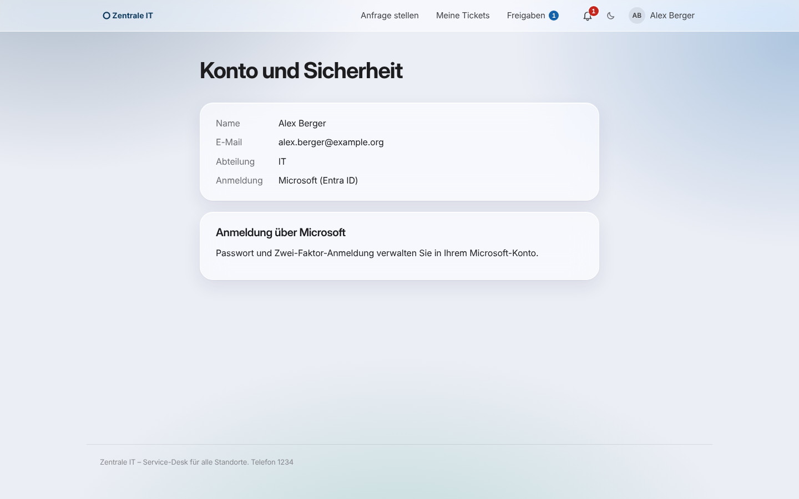
Für die Verwaltung#
Die Verwaltung erreichen alle mit einer Admin-Rolle über das Menü oben rechts → Verwaltung. Links steht oben das Ticketsystem, das gerade bearbeitet wird, darunter die globalen Bereiche.
Ansicht: Einfach oder Erweitert#
Unten links in der Verwaltung wählt jede Person ihre Ansicht (gespeichert im Browser):
- Einfach (Standard) zeigt, was man im Alltag braucht: Felder, Pflichtangaben, Optionen, Bedingungen, Gruppe und Priorität je Auswahl (als Auswahlliste), Titel, Text nach dem Absenden, Verbindung und Sichtbarkeit.
- Erweitert zeigt zusätzlich Feld-IDs, Prüfmuster und Höchstlängen, Felder nur für bestimmte Gruppen, freies Übersetzen von Werten, Zammad-Felder, Weiterleiten an andere Ticketsysteme, den Tickettext als HTML-Vorlage und beim Ticketsystem Anlage-Modus, Portal-Tag, „erledigt“-Status und Reihenfolge.
Die Ansicht ändert nur, was angezeigt wird – geprüft wird auf dem Server immer alles. Einstellungen, die schon einen Wert haben, bleiben auch in der einfachen Ansicht sichtbar. Ungespeicherte Änderungen im Formular-Editor bleiben beim Umschalten erhalten.
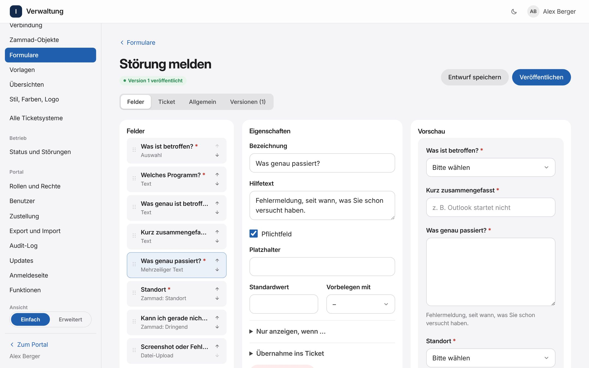
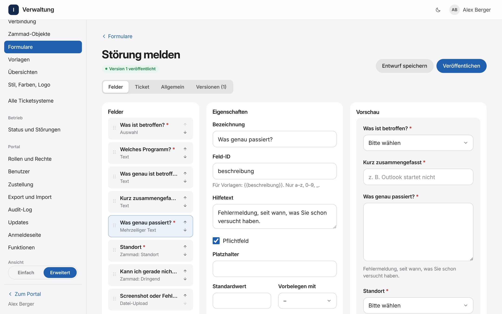
Übersicht#
Zeigt offene Aufgaben (z. B. Sicherheitshinweise zur Konfiguration), Zahlen zur Zustellung (auch wie viele Anfragen noch bei Vorgesetzten liegen) und Formular- oder Stil-Versionen, die auf Freigabe warten.
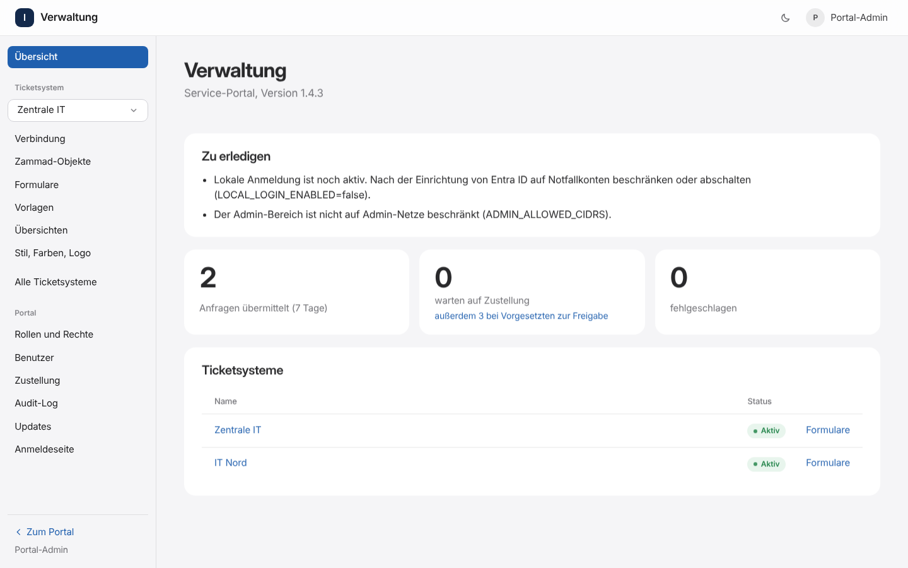
Ticketsysteme und Verbindung#
Alle Ticketsysteme → Ticketsystem hinzufügen verbindet eine Zammad-Instanz. Auf der Seite Verbindung des Systems stehen:
| Einstellung | Bedeutung |
|---|---|
| Zammad-Adresse, API-Token | Zugang; das Token wird verschlüsselt gespeichert und nie wieder angezeigt |
| Tickets anlegen | „Im Namen des Kunden“ (empfohlen): Zammad prüft selbst, welche Tickets ein Kunde sehen darf |
| Standard-Gruppe | Zammad-Gruppe, wenn das Formular keine vorgibt |
| Tag für Portal-Tickets | wird an jedes Ticket gehängt, z. B. für den Trigger der Eingangsbestätigung |
| Status | Aktiv / Wartung (Anfragen werden gesammelt und später zugestellt) / Deaktiviert |
| Sichtbar für Entra-Gruppen | leer = für alle; sonst nur für Mitglieder dieser Gruppen |
| Erlaubte Zammad-Gruppen | nur in diese Gruppen legt das Portal Tickets; Formulare mit anderen Gruppen lassen sich nicht speichern (leer = keine Einschränkung, die Übersicht warnt dann) |
| Namen der Bearbeiter ausblenden | Antworten erscheinen im Portal mit dem Namen des Ticketsystems statt mit dem Namen der Person; E-Mail-Adressen werden nie angezeigt |
| Vier-Augen-Prinzip | Formulare und Branding gehen erst nach Freigabe durch eine zweite Person live |

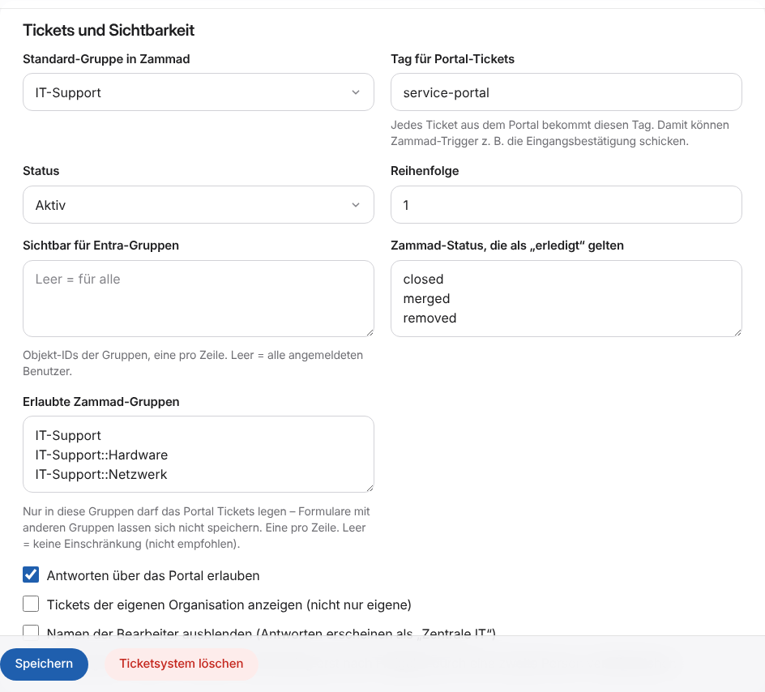
Zammad-Objekte freigeben#
Hier stehen die Ticket-Attribute aus dem Zammad-Objekt-Manager. Ein Häkchen gibt das Attribut für Formulare frei. Bei Auswahlfeldern lässt sich festlegen, welche Werte die Mitarbeitenden wählen dürfen – im Beispiel vom sec_status nur die Hardware-Werte. „Alle Werte freigeben“ übernimmt auch Werte, die später in Zammad hinzukommen.

Nicht unterstützte Typen (z. B. Benutzerauswahl) sind ausgegraut. Fehlt die Liste ganz, braucht der API-Benutzer in Zammad das Recht admin.object.
Formulare#
Formulare listet alle Formulare mit Status. Kopieren … übernimmt ein Formular als Entwurf in ein anderes Ticketsystem.
In Datei exportieren lädt alle Formulare (jeweils die veröffentlichte Version) und Vorlagen des Ticketsystems als JSON-Datei herunter. Aus Datei übernehmen … spielt mehrere Formulare auf einmal aus so einer Datei ein – auch in ein anderes Ticketsystem oder ein anderes Portal ({"forms": [{"slug", "name", "description", "category", "sort", "definition"}], "templates": [...]}). Die Vorschau zeigt je Formular „neu“, „neue Version“ oder „unverändert“. Formulare mit gleichem Kürzel bekommen eine neue Version, andere bleiben unangetastet. Mit Direkt veröffentlichen sind die Änderungen sofort aktiv (mit Vier-Augen-Prinzip gehen sie zur Freigabe), sonst bleiben sie Entwürfe zum Prüfen im Editor.
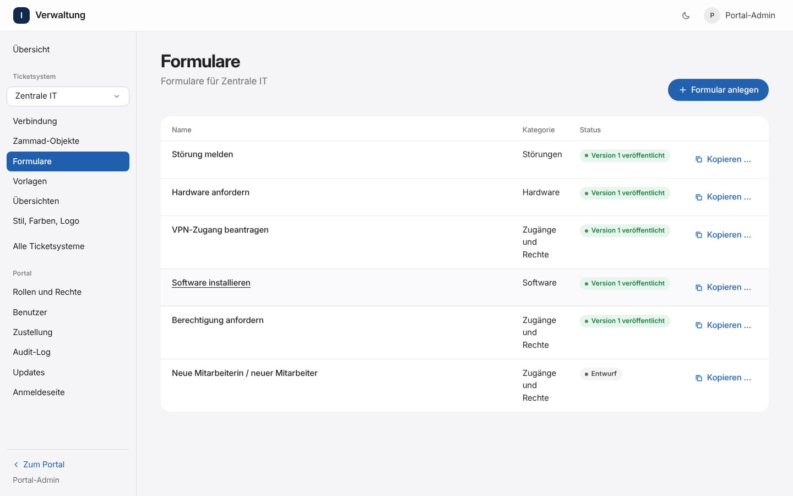
Der Editor hat vier Reiter:
Felder – links die Felder (per Ziehen oder mit den Pfeilen sortieren), in der Mitte die Eigenschaften des gewählten Feldes, rechts die Live-Vorschau.
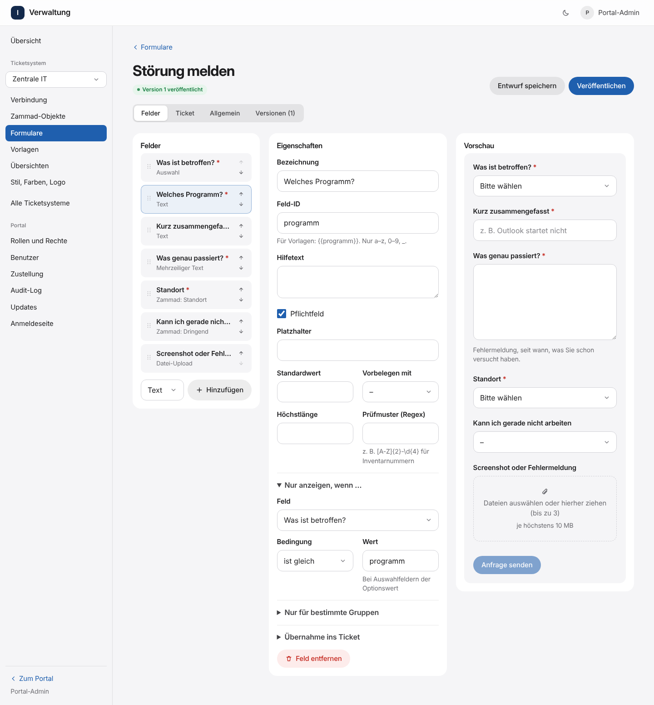
| Eigenschaft | Zweck |
|---|---|
| Feldtyp | Text, Mehrzeiliger Text, E-Mail, Zahl, Datum, Kästchen, Auswahl, Mehrfachauswahl, Datei, Hinweistext, Freigabe durch Vorgesetzte(n) oder ein freigegebenes Zammad-Objekt |
| Feld-ID | Name für Vorlagen, z. B. {{betreff}} |
| Pflichtfeld, Platzhalter, Standardwert | Standardwert auch aus dem Profil (Name, E-Mail, Abteilung) |
| Prüfmuster | regulärer Ausdruck, z. B. \d{4} für Kostenstellen |
| Nur anzeigen, wenn … | Feld erscheint abhängig von einem anderen Feld |
| Nur für bestimmte Gruppen | Feld nur für Mitglieder bestimmter Entra-Gruppen |
| Übernahme ins Ticket | nur Tickettext, als Tag, bestimmt Gruppe oder Priorität, in ein Zammad-Feld schreiben, leitet an ein Ticketsystem weiter (Ansicht „Erweitert“), oder gar nicht |
Weiterleiten an ein anderes Ticketsystem: Bei einem Auswahlfeld (eine Auswahl) unter Übernahme ins Ticket → Leitet an ein Ticketsystem weiter wählen. Für jede Option lässt sich ein Ziel festlegen: ein anderes Ticketsystem und optional eine Gruppe dort. Beispiel: „Wo arbeiten Sie?“ – „Standort Nord“ geht an IT Nord, „Zentrale“ bleibt bei der Zentralen IT.

- Optionen ohne Ziel bleiben im Ticketsystem des Formulars. Ein Formular hat höchstens ein weiterleitendes Feld; ist es ausgeblendet („Nur anzeigen, wenn …“), wird nicht weitergeleitet.
- Im Ziel gilt die gewählte Gruppe, sonst dessen Standard-Gruppe. Gruppe und Gruppenfelder des Formulars gelten nur im eigenen Ticketsystem. Die Gruppe muss im Ziel erlaubt sein.
- Zammad-Felder kommen nur an, wenn sie im Ziel freigegeben sind; sonst stehen die Angaben nur im Tickettext. Tag des Portals, Kunde und Freigabe richten sich nach dem Ziel.
- Rechte: Weiterleiten darf nur, wer auch im Ziel Formulare bearbeiten darf (beim Veröffentlichen: veröffentlichen, bei Vier-Augen: freigeben). Mitarbeitende brauchen im Ziel das Recht „Anfragen stellen“ – sonst lehnt das Portal die Anfrage mit einer Meldung ab, statt sie still woanders abzulegen.
- Nach dem Absenden steht dort, an welches Ticketsystem die Anfrage gegangen ist; unter Meine Anfragen erscheint sie mit diesem Ticketsystem. Im Audit-Log steht sie beim Ziel, mit Verweis auf das Formular-System.
- In Exportdateien steht statt der internen ID das Kürzel des Ziels, damit die Weiterleitung auch in einem anderen Portal funktioniert.
Ticket – wie das Ticket entsteht: Gruppe, Priorität, zusätzliche Tags, Titel- und Textvorlage, Text nach dem Absenden. {{alle_felder}} fügt eine Tabelle mit allen ausgefüllten Feldern ein. Eingaben werden immer sicher maskiert, Vorlagen können keinen Code ausführen.
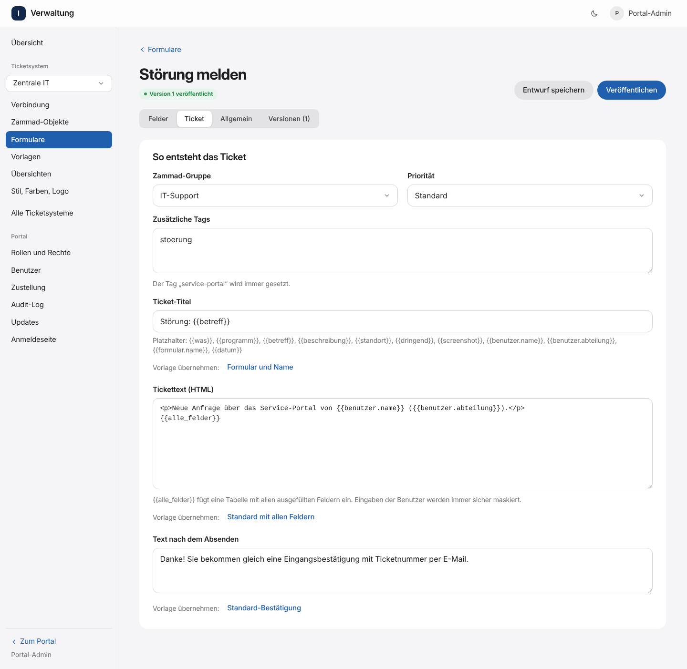
Allgemein – Name, Kategorie (gruppiert die Formulare im Portal), Beschreibung, Sichtbarkeit.
Versionen – jede Veröffentlichung ist eine Version. Ältere Versionen lassen sich als neuer Entwurf wiederherstellen. Mit Vier-Augen-Prinzip steht hier Freigeben/Ablehnen für die zweite Person.
Ablauf: Entwurf speichern → Veröffentlichen (bzw. Zur Freigabe senden). Bis zur Veröffentlichung sehen Mitarbeitende die alte Version.
Freigabe durch Vorgesetzte: Feldtyp Freigabe durch Vorgesetzte(n) wählen und Hinzufügen – das Feld kommt wie jedes andere ins Formular (eines pro Formular). Mitarbeitende tragen dort die freigebende Person ein; die Anfrage landet erst nach deren Freigabe in Zammad.
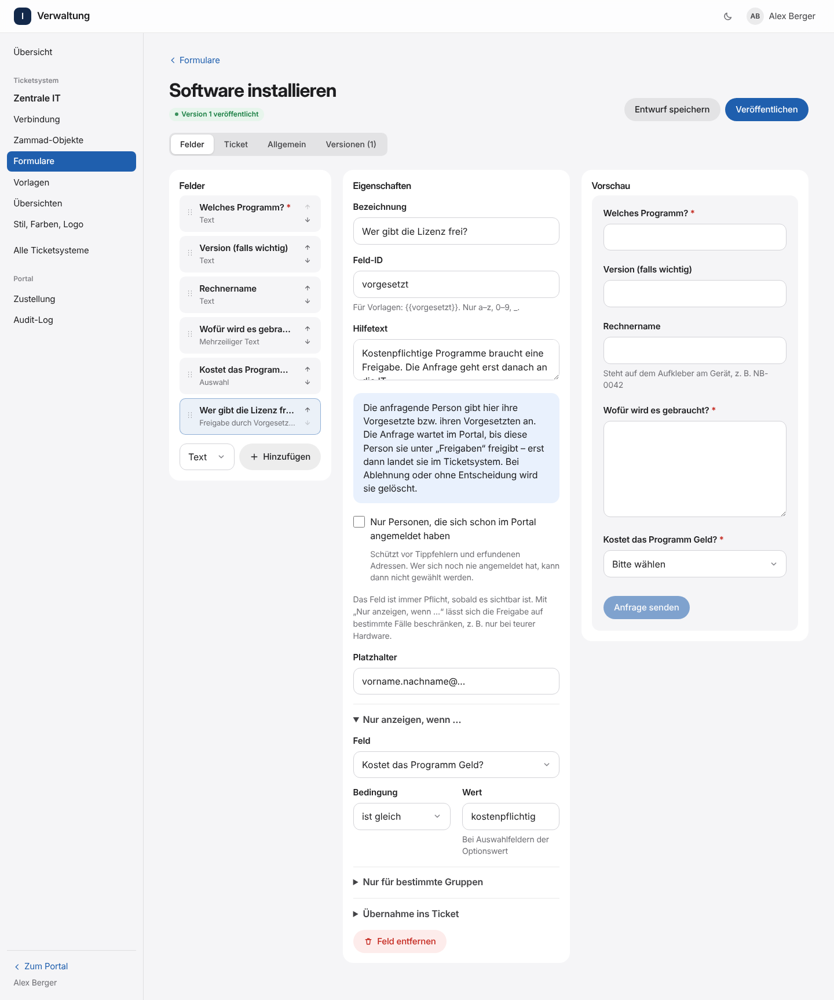
- Das Feld ist immer Pflicht, sobald es sichtbar ist. Mit Nur anzeigen, wenn … wird die Freigabe bedingt, z. B. nur bei „Ja, Lizenz nötig“ oder bei einer bestimmten Hardware.
- Nur Personen, die sich schon im Portal angemeldet haben: schützt vor Tippfehlern und erfundenen Adressen.
- Freigeben dürfen nur Mitglieder dieser Gruppen: z. B. die Entra-Gruppe der Führungskräfte. Dann lässt sich die Freigabe nicht über ein eigenes Zweitkonto oder eine beliebige Kollegin erteilen. Die Mitgliedschaft wird beim Eintragen und beim Entscheiden geprüft.
- Freigeben können nur Microsoft-Konten, keine lokalen Konten.
- Übernahme ins Ticket: „Nur im Tickettext“ (Standard) oder „Nicht übernehmen“. Den Vermerk „Freigegeben von … am …“ und den Tag
freigegebensetzt das Portal immer. - Fristen (Erinnerung nach 3, Ablauf nach 14 Tagen) stellt die IT in
deploy/.envein (Betrieb). - Nicht zu verwechseln mit dem Vier-Augen-Prinzip für Formulare: Das betrifft die Veröffentlichung eines Formulars durch Admins, nicht einzelne Anfragen.
Vorlagen und Übersichten#
Vorlagen sind Textbausteine für Titel, Tickettext und den Text nach dem Absenden. Im Formular-Editor lassen sie sich mit einem Klick übernehmen. In Datei exportieren und Aus Datei übernehmen … gibt es auch hier: Vorlagen mit gleicher Art und gleichem Namen werden aktualisiert, neue angelegt.
Übersichten sind die Reiter unter „Meine Tickets“: Name, welche Tickets (offen, erledigt, alle), Spalten und Sortierung.
Stil, Farben und Logo#
Stil. Jedes Ticketsystem kann sein eigenes Erscheinungsbild haben. Wer zwischen zwei Systemen wechselt, sieht sofort, wohin die Anfrage geht. Zur Wahl stehen:
| Stil | Wirkung |
|---|---|
| Standard | ruhig und hell, große Farbfläche, runde Formen |
| Glas | durchscheinende Flächen mit Unschärfe über einem weichen Farbverlauf aus den Farben des Systems – im Stil von Apple |
| Fluent | sachlich, kleine Rundungen, Akzentlinien unter Reitern und in der Seitenleiste, Segoe-Schrift unter Windows – im Stil von Microsoft |
| Material | getönte Flächen, kräftige Rundungen, runde Symbole, getönte Schaltflächen – im Stil von Google |
| Kontrast | schwarze Linien, hoher Kontrast, unterstrichene Links, deutliche Fokus-Rahmen – besonders gut lesbar |
Jeder Stil funktioniert im hellen und im dunklen Design. Die Vorschau im Auswahlfeld zeigt jeden Stil mit den aktuellen Farben.
Farben. Unter Farben gibt es zwei Möglichkeiten:
- Farben des Stils: Jeder Stil bringt eigene, aufeinander abgestimmte Farben mit, die die Kontrastregeln erfüllen. Man muss also nichts einstellen.
- Eigene Farben:
- Ein Klick auf eine fertige Kombination übernimmt deren Farben, zur Wahl stehen Ozean, Wald, Abendrot, Beere, Graphit, Sonne, Minze und Lavendel.
- Die vier Farben lassen sich auch einzeln wählen.
- Beim Wechsel auf die Farben des Stils bleiben die eigenen gespeichert.
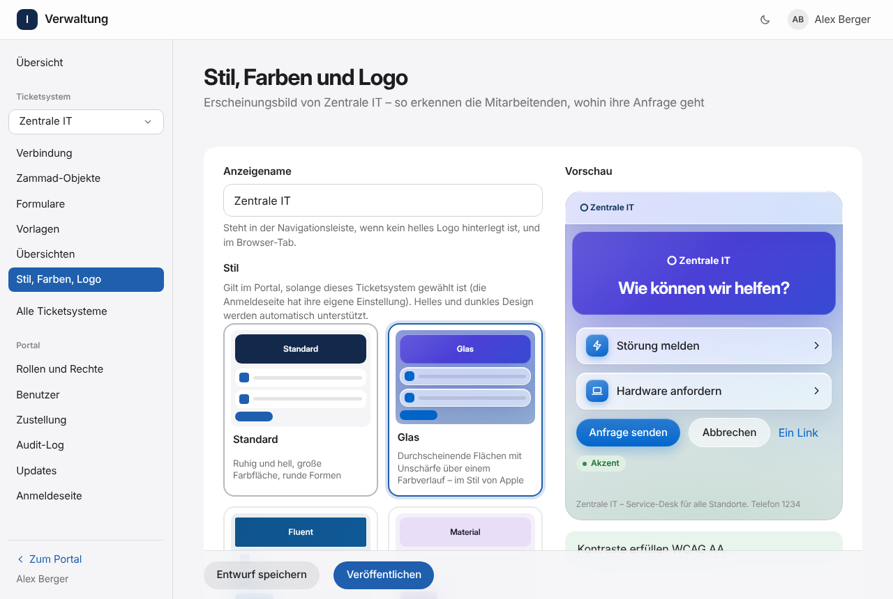
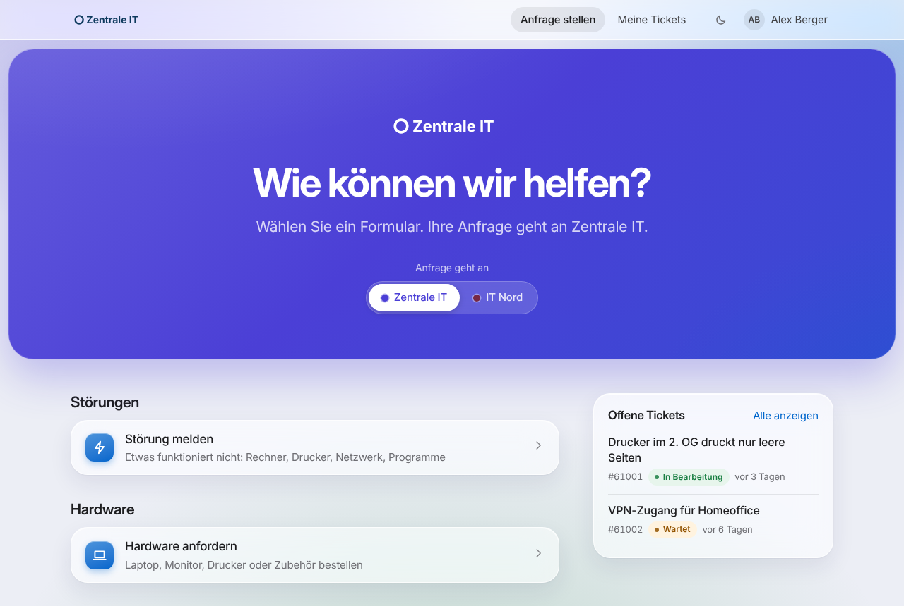
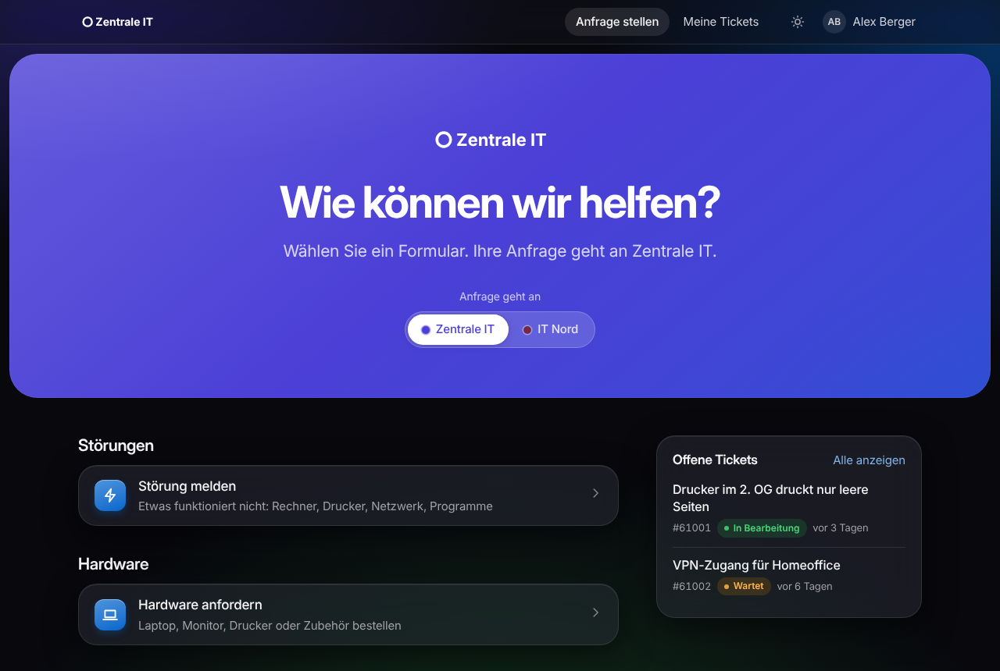
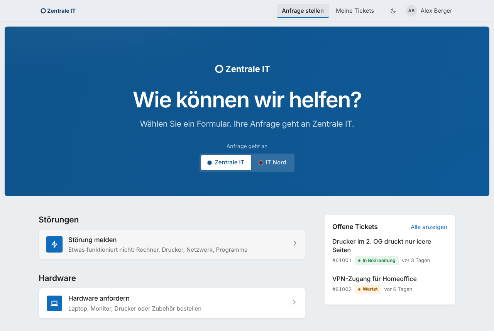
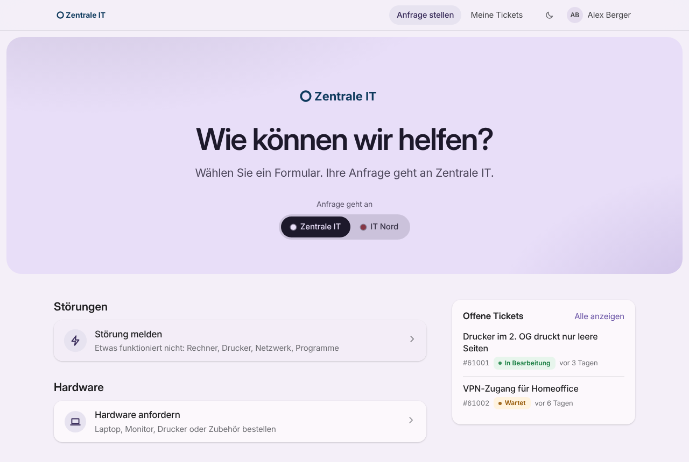
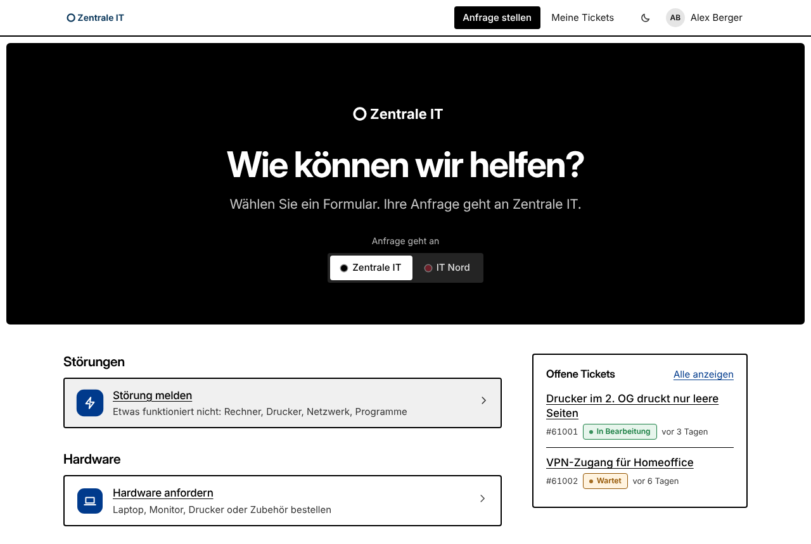
Weitere Angaben pro Ticketsystem: Anzeigename, Farbe der großen Farbfläche (Startseite) und der Schrift darauf, Primärfarbe (Schaltflächen, Links, Symbole) und Akzentfarbe, drei Logos – auf der Farbfläche (Startseite und Anmeldung; ist die Farbfläche hell, zum Beispiel bei Material, erscheint dort das Logo des hellen Designs), Navigationsleiste im hellen Design und Navigationsleiste im dunklen Design (optional; ohne steht im dunklen Design das helle Logo auf einem weißen Feld) –, Favicon, Begrüßung, Fußzeile, Links zu Impressum und Datenschutz. Die Vorschau rechts zeigt das Ergebnis, die Kontrastprüfung warnt bei schlecht lesbaren Kombinationen (WCAG AA). Logos: PNG, JPEG, WebP oder SVG bis 1 MB; SVGs werden bereinigt (Metadaten von Grafikprogrammen fallen weg), SVGs mit Skripten oder externen Verweisen werden abgelehnt.
Logogröße. Zwei Schieberegler stellen die Höhe des Logos ein: in der Navigationsleiste (20–72 Pixel, Standard 28) und auf der Farbfläche der Startseite (24–200 Pixel, Standard 44). Die Breite passt sich an. Auf der Anmeldeseite gilt die Größe der Farbfläche (dort höchstens 120 Pixel).
Links in der Navigationsleiste. Bis zu sechs eigene Links, zum Beispiel Intranet, Wissensdatenbank oder IT-Hotline. Erlaubt sind https://, http://, mailto: und tel:. Web-Links öffnen in einem neuen Tab. Ein oder zwei Links stehen direkt in der Leiste, ab drei kommen sie in ein Menü Links (auf dem Handy als Ketten-Symbol).
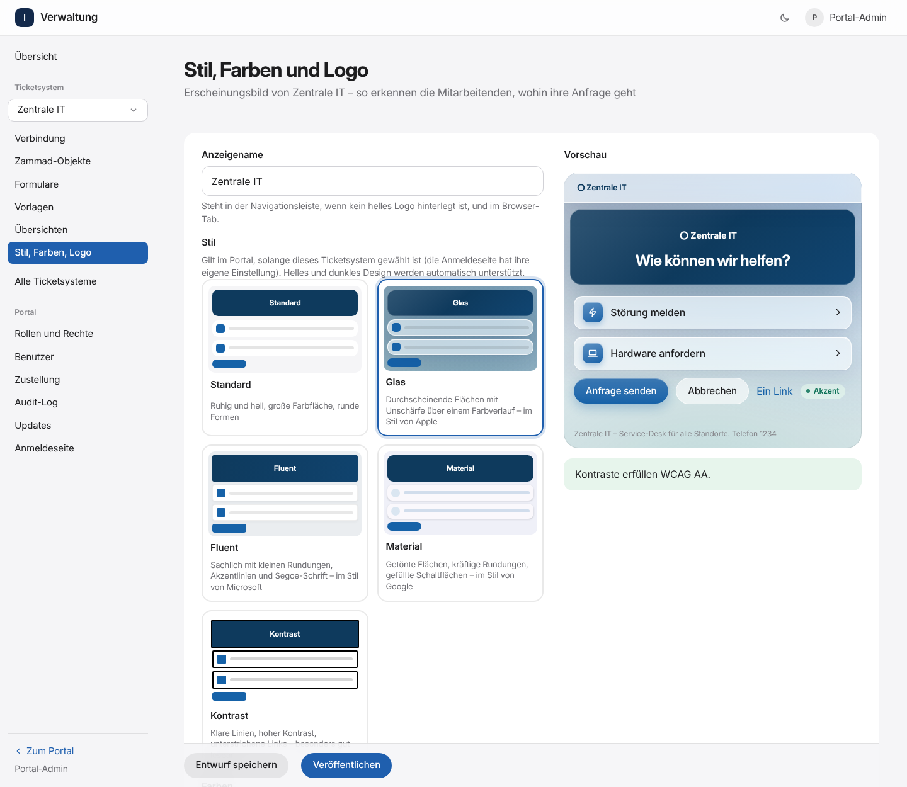
Die Anmeldeseite hat ein eigenes Erscheinungsbild unter Anmeldeseite. Dort steht nur, was auf dieser Seite auch sichtbar ist: Logo und Logogröße auf der Farbfläche, Überschrift, ein optionaler Text darunter, Fußzeile, Links zu Impressum und Datenschutz, Stil und Farben sowie Anzeigename und Favicon für den Browser-Tab. Die Vorschau zeigt die Anmeldeseite im Kleinen. Nach der Anmeldung gilt das Erscheinungsbild des gewählten Ticketsystems. Die Verwaltung selbst bleibt im Standard-Stil, weil sie alle Ticketsysteme gemeinsam betreut.
Funktionen#
Unter Funktionen (Recht „Globale Einstellungen ändern“) wird jede Funktion einzeln ein- oder ausgeschaltet. Ausgeschaltete Funktionen verschwinden aus Portal und Verwaltung, der Server lehnt sie ab.
| Funktion | Standard | Ausgeschaltet |
|---|---|---|
| Service-Status | aus | keine Status-Seite mit Services |
| Störungen | aus | keine Störungen, kein Banner, keine Hinweise in Formularen |
| Geplante Wartungen | aus | keine Wartungen |
| Bekannte Probleme | aus | keine Probleme in Verwaltung und Portal |
| Freigabe durch Vorgesetzte | an | das Freigabe-Feld entfällt, neue Anfragen gehen direkt an die IT; schon wartende Freigaben laufen weiter |
| Weiterleitung aus Formularen | an | jede Anfrage bleibt im Ticketsystem ihres Formulars |
| Benachrichtigung bei Antworten | an | keine Nachricht unter der Glocke, wenn die IT in Zammad antwortet |
| Als App installierbar | an | Edge und Chrome bieten keine Installation mehr an, kein Manifest, kein Service Worker |
Dazu: Standorte (bei Störungen und Wartungen auswählbar), Anzahl der Betroffenen im Portal zeigen und Bei großen Störungen alle benachrichtigen (alle, die das Ticketsystem sehen und sich in den letzten 90 Tagen angemeldet haben).
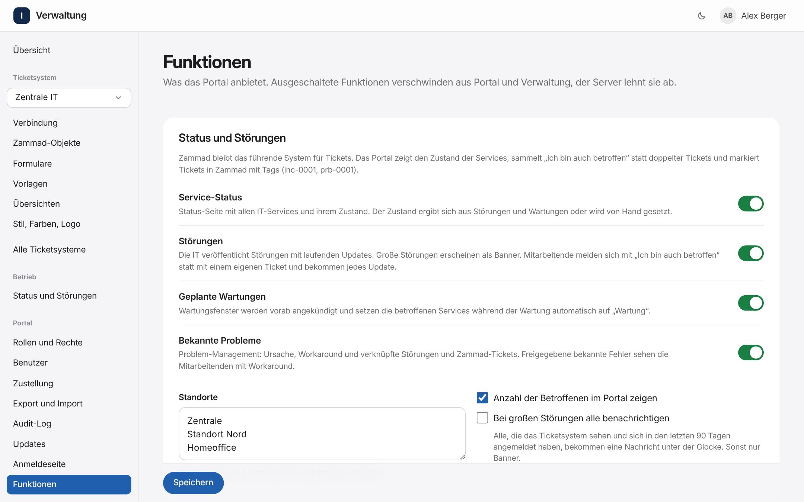
Unter Portal als App › Per Intune auf alle Geräte verteilen steht der fertige Wert für die Edge-Richtlinie WebAppInstallForceList mit der Adresse des Portals – zum Kopieren in Intune. Damit installiert Edge das Portal auf allen zugewiesenen Geräten automatisch. Schritt für Schritt: Portal als App und Verteilung per Intune.

Status und Störungen verwalten#
Status und Störungen ist eine Seite für alle Ticketsysteme, in denen man das Recht „Services, Störungen und Wartungen verwalten“ bzw. „Probleme verwalten“ hat. Oben lässt sich auf ein Ticketsystem filtern. Zammad bleibt das führende System für Tickets.
- Störungen: Störung melden mit Titel, erster Meldung, Auswirkung (eingeschränkt, Teilausfall, Ausfall), Beginn, betroffenen Services und Standorten. Große Störung zeigt ein Banner auf allen Seiten. Optional ein führendes Ticket in Zammad (Nummer): Es bekommt dort den Tag der Störung (
inc-0003). In der Störung schreiben Sie Updates mit neuem Stand (wird untersucht, Ursache gefunden, behoben/wird beobachtet, behoben); alle, die sich als betroffen gemeldet haben, bekommen sie unter der Glocke. Die Liste der Betroffenen (Name, E-Mail, Abteilung) sehen nur Admins. - Wartungen: Wartung planen mit Zeitraum, Services und Standorten. Während des Zeitfensters stehen die Services auf „Wartung“. Absagen oder löschen jederzeit.
- Services: Name, Kurzbeschreibung, Reihenfolge. Der Zustand ergibt sich aus offenen Störungen und laufenden Wartungen; zusätzlich lässt sich ein Zustand von Hand setzen (mit Hinweis), der schlimmere gewinnt.
- Probleme: Nummer (
PRB-0001), Stand (neu, in Analyse, bekannter Fehler, gelöst, geschlossen), Service, Verantwortlich, Beschreibung, Ursache (bleibt intern) und Workaround. Als bekannten Fehler im Portal zeigen macht Titel, Beschreibung und Workaround für alle sichtbar. Tickets in Zammad verknüpfen Sie über die Ticketnummer – das Ticket bekommt dort den Tagprb-0001, die Liste zeigt den aktuellen Stand aus Zammad. Störungen ordnen Sie in der Störung selbst einem Problem zu.
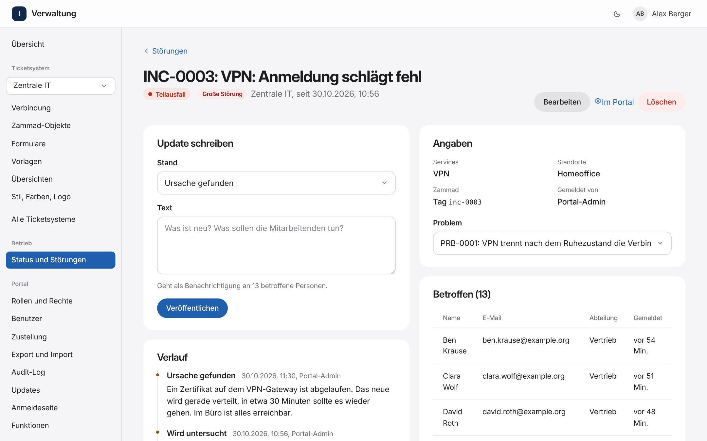
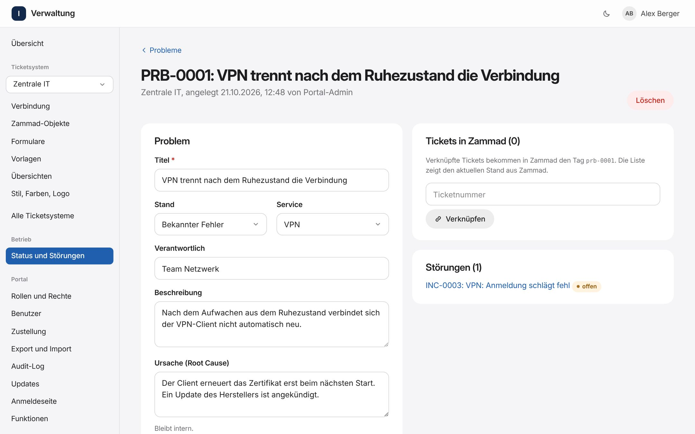
Formulare und Services: Im Formular-Editor unter Ticket → Betroffene Services (wenn Störungen oder Wartungen eingeschaltet sind). Bei einer Störung dieser Services zeigt das Formular den Hinweis mit „Ich bin auch betroffen“; Tickets, die währenddessen aus dem Formular entstehen, bekommen in Zammad den Tag der Störung. In Exportdateien stehen die Services mit Namen.
Rollen und Rechte#
Rechte werden über Rollen vergeben, die einer Entra-Gruppe, einer Person oder allen zugeordnet werden – entweder für alle Ticketsysteme oder für eines.
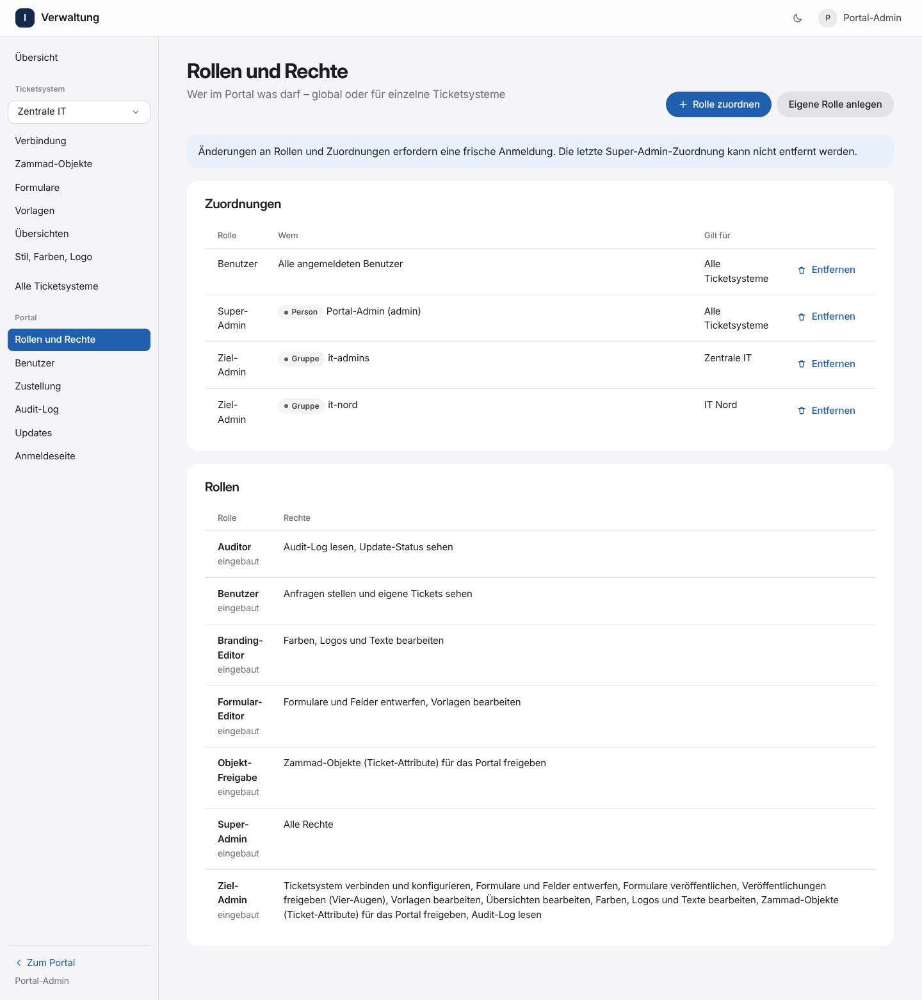
| Eingebaute Rolle | Rechte |
|---|---|
| Super-Admin | alles |
| Ziel-Admin | ein Ticketsystem komplett verwalten (Verbindung, Objekte, Formulare inkl. Freigabe, Vorlagen, Übersichten, Branding, Services, Störungen, Wartungen, Probleme, Audit-Log) |
| Service-Desk | Services, Störungen, Wartungen und Probleme pflegen |
| Formular-Editor | Formulare und Vorlagen bearbeiten, nicht veröffentlichen |
| Branding-Editor | Farben, Logos, Texte |
| Objekt-Freigabe | Zammad-Objekte freigeben |
| Auditor | Audit-Log und Update-Status lesen |
| Benutzer | Portal nutzen (standardmäßig allen zugeordnet) |
Eigene Rollen lassen sich aus Einzelrechten zusammenstellen. Rollenverwaltung, Benutzerverwaltung, Updates und globale Einstellungen wirken nur bei einer Zuordnung für alle Ticketsysteme. Die letzte Super-Admin-Zuordnung kann nicht entfernt werden.
Benutzer#
Listet lokale Konten und alle Microsoft-Benutzer, die sich schon angemeldet haben. Lokalen Benutzer anlegen erzeugt ein Passwort mit 20 Zeichen, das genau einmal angezeigt wird und bei der ersten Anmeldung geändert werden muss.
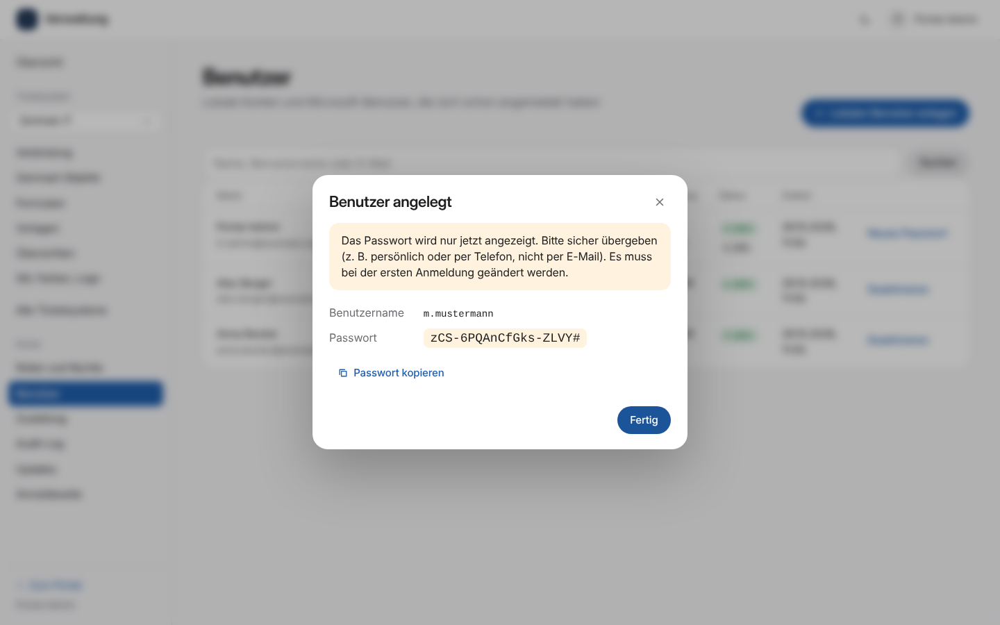
Neues Passwort setzt ein neues generiertes Passwort (optional auch die Authenticator-App zurück) und beendet alle Sitzungen des Kontos. Gesperrte Konten (nach 5 Fehlversuchen für 15 Minuten) lassen sich hier entsperren.
Bestätigung kritischer Aktionen#
Für Rollen, Benutzer, Ticketsystem-Zugangsdaten und Updates verlangt das Portal eine frische Anmeldung, wenn die letzte länger als 10 Minuten zurückliegt: bei lokalen Konten Passwort + Code, bei Microsoft-Konten eine erneute Microsoft-Anmeldung.
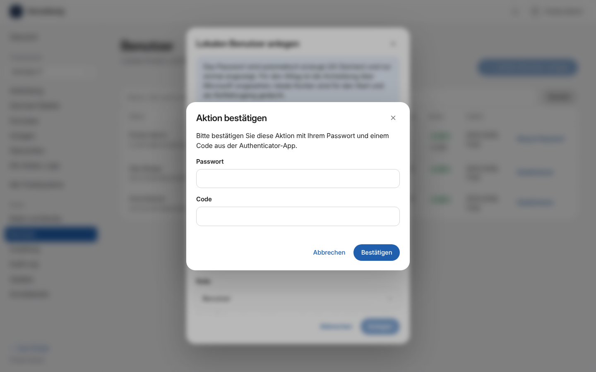
Zustellung#
Alle Anfragen auf dem Weg nach Zammad. Fehlgeschlagene Anfragen (z. B. weil eine Gruppe in Zammad umbenannt wurde) lassen sich nach der Korrektur erneut senden. Der Filter zeigt auch Anfragen, die noch bei Vorgesetzten liegen (Wartet auf Freigabe) oder nie übermittelt wurden (Abgelehnt, Zurückgezogen, Abgelaufen). Entscheiden kann darüber nur die eingetragene Person, nicht die Verwaltung.
Abbrechen: Fehlgeschlagene, wartende und auf eine Freigabe wartende Anfragen lassen sich hier abbrechen (z. B. doppelt gestellt oder versehentlich abgeschickt). Ein Grund ist freiwillig und steht in der Benachrichtigung an die Person. Inhalt und Anhänge werden gelöscht, nichts geht an Zammad; eine offene Freigabe endet mit. Anfragen, die gerade zugestellt werden, lassen sich nicht abbrechen – kurz warten und erneut versuchen.
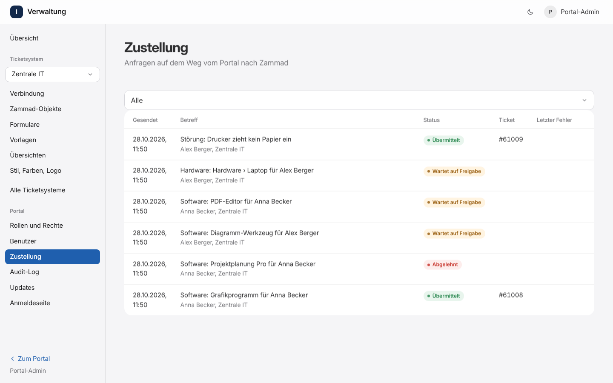
Export und Import#
Unter Export und Import (nur für globale Admins) lassen sich alle Ticketsysteme mit ihren Einstellungen in ein anderes Portal übertragen, z. B. vom Test- ins Produktivsystem.
Exportieren: Die Datei enthält alle Ticketsysteme: Verbindung, erlaubte Gruppen, freigegebene Zammad-Objekte, Formulare mit allen Versionen, Vorlagen, Übersichten, Stil, Farben und Logos. Benutzer, Rollen, Anfragen und Audit-Log sind nicht enthalten.
- Zammad-API-Tokens mitnehmen: Dann wird ein Export-Passwort (mindestens 12 Zeichen) verlangt. Die Tokens werden damit verschlüsselt. Das Passwort getrennt von der Datei weitergeben.
- Ohne Tokens enthält die Datei keine Geheimnisse. Im Zielsystem werden die Tokens dann unter Verbindung eingetragen; neue Ticketsysteme ohne Token werden dort deaktiviert angelegt.
Importieren: Datei wählen, ggf. Export-Passwort eingeben, Datei prüfen. Die Vorschau zeigt, welche Ticketsysteme ersetzt, neu angelegt und gelöscht werden. Erst Import ausführen ändert etwas – nach einer Bestätigung und mit frischer Anmeldung.
- Der Import ersetzt alles: Danach gibt es genau die Ticketsysteme aus der Datei. Ticketsysteme mit gleichem Kürzel werden überschrieben (Formulare, Versionen, Vorlagen, Übersichten, Stil), fehlende gelöscht.
- Rollen-Zuordnungen und alte Anfragen von Ticketsystemen mit gleichem Kürzel bleiben erhalten.
- Ein Ticketsystem, das noch offene Anfragen hat (Zustellung oder Freigabe), wird nicht gelöscht – der Import bricht dann vorher ab, ohne etwas zu ändern.
- Alles wird geprüft wie bei der Eingabe in der Verwaltung (Zammad-Adressen, Formulare, Logos). Läuft etwas schief, bleibt das Zielsystem unverändert.
- Vorher eine Sicherung machen (
cli.ts backup), danach je Ticketsystem Verbindung testen und die Zammad-Objekte prüfen.
Audit-Log#
Jede Anmeldung und jede Änderung mit Person, Zeit, IP und Vorher/Nachher. Einträge können nicht geändert oder gelöscht werden; Integrität prüfen erkennt Manipulationen direkt in der Datenbank. Export als CSV.
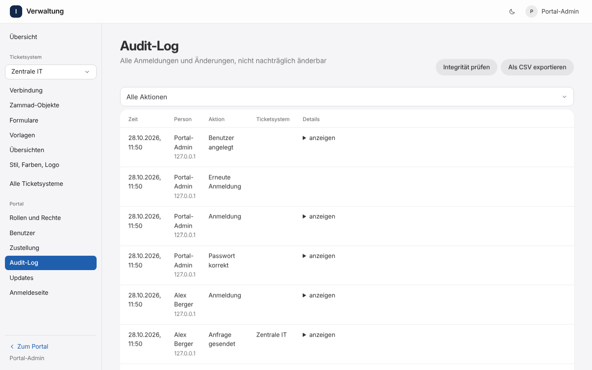
Updates#
Zeigt die installierte und die verfügbaren Versionen. Auf x.y.z aktualisieren startet das Update: Signatur prüfen, Datenbank sichern, neue Version bauen und starten. Startet sie nicht sauber, wird automatisch zurückgerollt. Details: Updates.
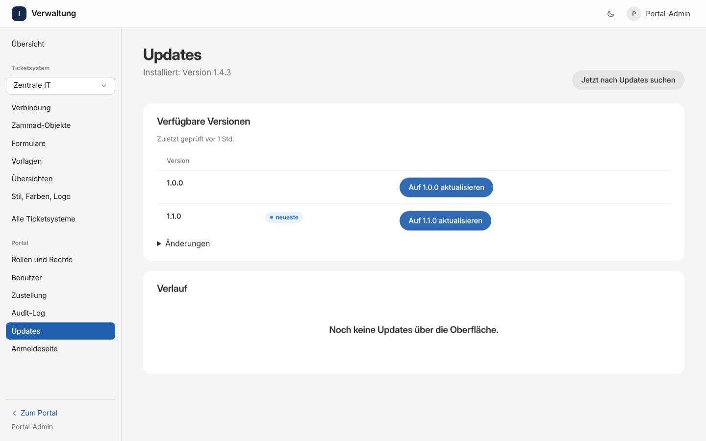
Diese Seite entsteht aus docs/BEDIENUNG.md.Nach oben